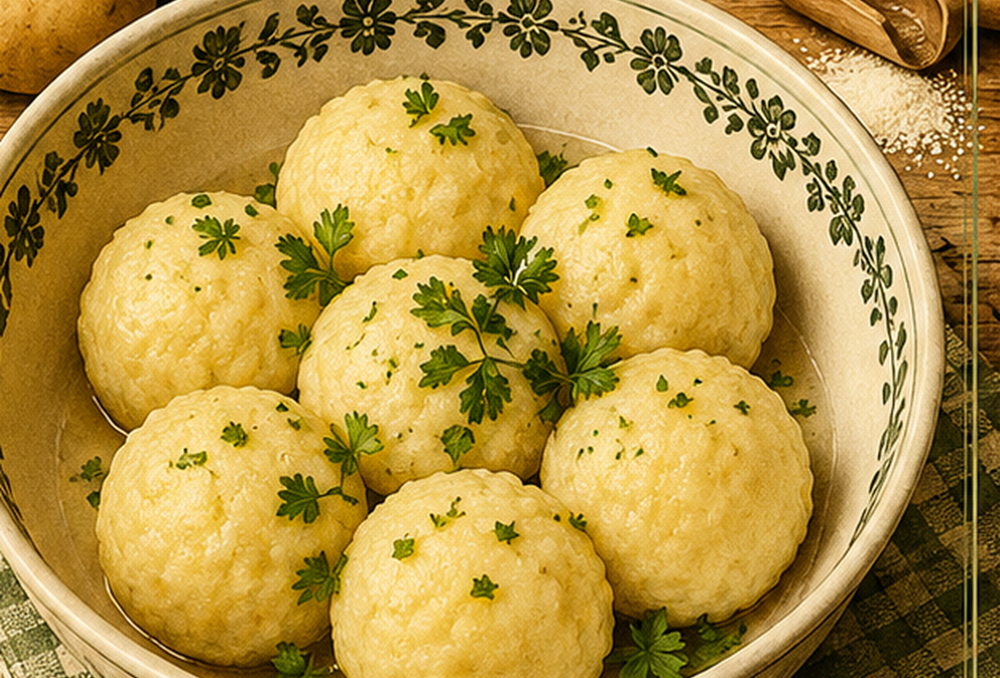

Klöße aus gekochten Kartoffeln
Kartoffelklöße aus geriebenen gekochten Kartoffeln, Grieß, Ei und Muskat.

Originale Überlieferung
Zwei Pfund gekochte Kartoffeln werden gerieben. Salz, Grieß, etwas Mehl, Muskat und ein bis zwei Eier werden gut darunter gemengt. Daraus formt man Klöße und kocht sie in Wasser gar.
Moderne Übertragung
Aus ausgekühlten, geriebenen Kartoffeln und den übrigen Zutaten entsteht ein formbarer Teig. Die Klöße ziehen in Salzwasser, bis sie oben schwimmen.
Zutaten
- 1 kg mehligkochende Kartoffeln, gekocht und ausgekühlt
- 4 EL Grieß
- 1–2 Eier
- etwas Mehl nach Bedarf
- Salz
- Muskat
Zubereitung
- Kartoffeln fein reiben oder durch die Kartoffelpresse drücken.
- Grieß, Ei, Salz und Muskat untermengen.
- So viel Mehl einarbeiten, dass ein weicher, formbarer Teig entsteht.
- Mit feuchten Händen Klöße formen und einen Probekloß garen.
- In siedendem Salzwasser ziehen lassen, bis die Klöße oben schwimmen.